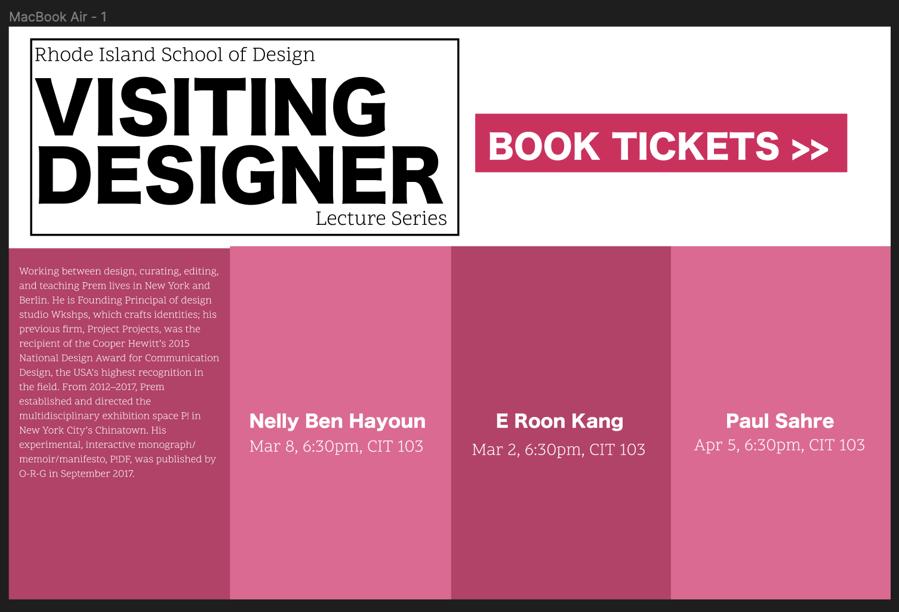
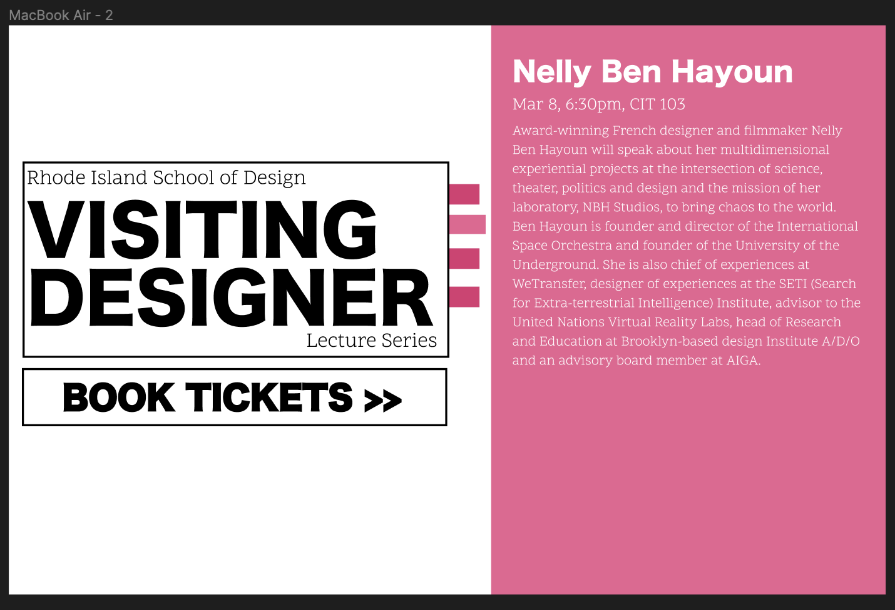
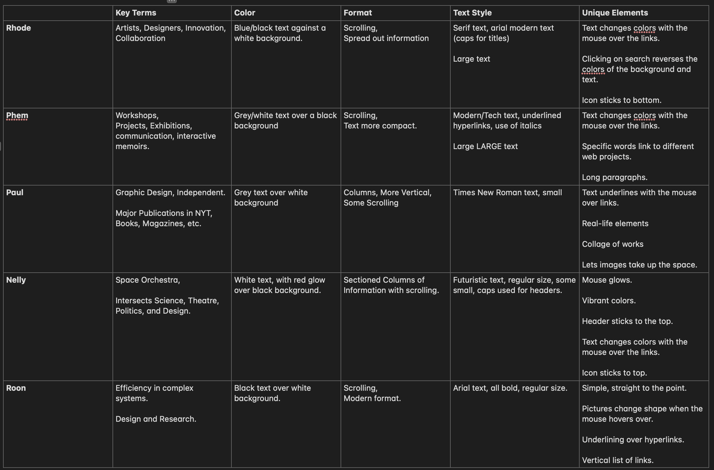
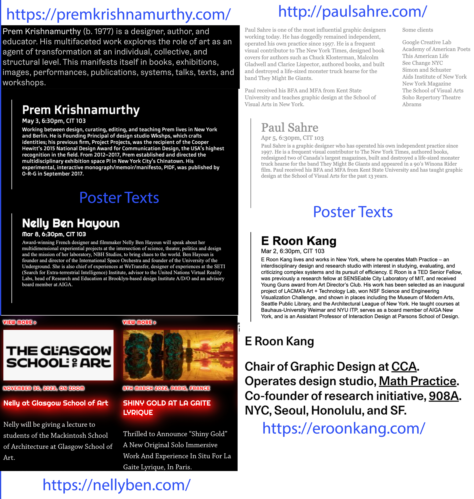
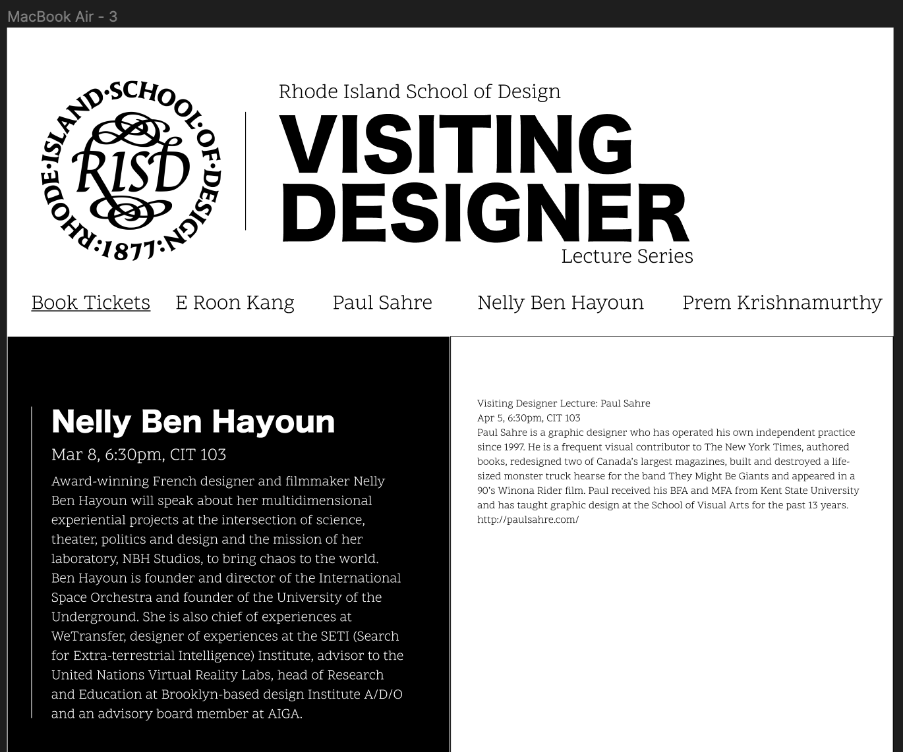
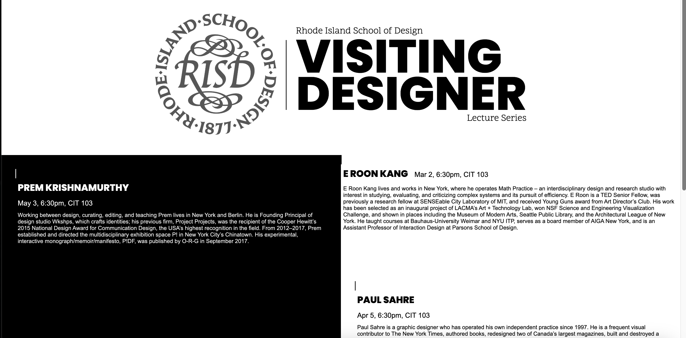

The initial prototype for this poster assignment didn’t involve research on the school hosting the event or the presenters listed. I was more focused on trying to figure out the format and interactive elements so the fonts, colours, etc, were made purely on preference. The first design I made included a row of the listed designers within distinct boxes. Hovering over one of them would reveal more information about the specified designer.
The second design involved having a line of bookmarks poking out from the logo. Clicking on them would allow the user to cycle through each presenter’s introduction easily. After receiving critique on these prototypes I changed course to research the school and designer’s websites for better reference.
I ended up making a chart of the elements each website used to get an idea of how to best represent everyone with my poster. I included key terms, colors, format, text style, and special elements as elements to consider. This led me to noticing how most of these websites take on a more black and white modern approach with considerable scrolling and use of columns. The text styles varied from formal, modern, and futuristic but there was a theme of color changing and underlining whenever a mouse hovered over a hyperlink. I decided to use those commonalities as a basis for my poster and feature each designer’s individual style through the font styles and hovering effects.
I used a font finder to help track down some of the fonts that were used, like the Righteous and Doppio One fonts. For the ones I could not find easily, I used similar or modern fonts to replace them.
I continued using Figma to help me design on the format of the poster. Since most of the websites involved a lot of scrolling, I wanted to use a portrait format to mimic that experience. Another thing I was considering was how to adjust the hero section to help draw in the viewer. The old format was not that enticing so I decided to follow up on a suggestion to used the RISD logo to help highlight the people organizing the event. I came up with the current format and decided to add a couple features to make it more interesting. Things like making the logo a hyperlink, having it change colors when the mouse hovered over it, and having the subtext move back and forth.
One of the initial hurdles I had was making the RISD logo change colours when the mouse hovered over it. I wanted to include the feature to make it obvious that the image was clickable but I couldn’t find an image filter command that would easily achieve that. I ended up working backwards and changing the original image’s color to blue in photoshop. Then I used filter: grayscale to make the image lose colour when the mouse wasn’t on it. For the rest of the hero section I used a flex box to organize the line and text elements into one row and then changed their sizes accordingly.
The other thing I took some time on was formatting the descriptions. I used a 4 x 2 grid structure initially so I could spread the information and include more of a scrolling experience. But I found the website was too empty since I couldn’t include the pictures that would normally fill the other websites I researched. I ended up organizing everything back into a 2 x 2 grid instead.
To help highlight the personalities of each designer I referenced their websites to see how they would present themselves. Paul Sahre, for example, took a simple approach by using formal small grey fonts. He would format his information into columns or a collage of pictures. Nelly Ben Hayoun, on the other hand, used widely-spaced futuristic text, vibrant glowing text and dark backgrounds to highly her interest in science. I tried to mimic their text styles to the best of my ability and included special effects on their names. When hovering over these hyperlinks, it is possible to see an underline, a glowing effect, or a change in colour.
Some other notable things I did was adding the social media footer and the book tickets button. I originally wanted them to be together as a sticky navigation bar but I encountered some issues. I couldn’t figure out how to keep everything stuck to the top while also using the display:flexbox and justify-content: space-inbetween. The bar was also see through despite using background-color: white. I ended up making the social media a footer and the book tickets button a call-to action between the hero and information section. I feel like it’s still out of place there but it didn’t make sense to put at the bottom since it can be easily overlooked there.